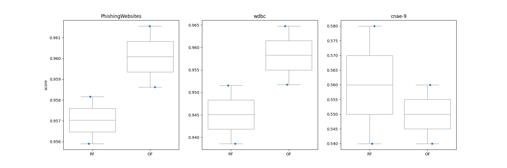

Note
Click here to download the full example code
Plot oblique forest and axis-aligned random forest predictions on cc18 datasets#
A performance comparison between oblique forest and standard axis- aligned random forest using three datasets from OpenML benchmarking suites.
Two of these datasets, namely [WDBC](https://www.openml.org/search?type=data&sort=runs&id=1510) and [Phishing Website](https://www.openml.org/search?type=data&sort=runs&id=4534) datasets consist of 31 features where the former dataset is entirely numeric and the latter dataset is entirely norminal. The third dataset, dubbed [cnae-9](https://www.openml.org/search?type=data&status=active&id=1468), is a numeric dataset that has notably large feature space of 857 features. As you will notice, of these three datasets, the oblique forest outperforms axis-aligned random forest on cnae-9 utilizing sparse random projection mechanism. All datasets are subsampled due to computational constraints.
Loading [PhishingWebsites] dataset..
Loading [wdbc] dataset..
Loading [cnae-9] dataset..
It took 34 seconds to run the script
import pandas as pd
from datetime import datetime
import seaborn as sns
import matplotlib.pyplot as plt
from sklearn.ensemble import RandomForestClassifier
from sklearn.model_selection import RepeatedKFold, cross_validate
from sklearn.datasets import fetch_openml
from sktree import ObliqueRandomForestClassifier
random_state = 123456
t0 = datetime.now()
data_ids = [4534, 1510, 1468] # openml dataset id
df = pd.DataFrame()
def load_cc18(data_id):
df = fetch_openml(data_id=data_id, as_frame=True, parser="pandas")
# extract the dataset name
d_name = df.details["name"]
# Subsampling large datasets
if data_id == 1468:
n = 100
else:
n = int(df.frame.shape[0] * 0.8)
df = df.frame.sample(n, random_state=random_state)
X, y = df.iloc[:, :-1], df.iloc[:, -1]
return X, y, d_name
def get_scores(X, y, d_name, n_cv=5, n_repeats=1, **kwargs):
clfs = [RandomForestClassifier(**kwargs), ObliqueRandomForestClassifier(**kwargs)]
tmp = []
for i, clf in enumerate(clfs):
cv = RepeatedKFold(n_splits=n_cv, n_repeats=n_repeats, random_state=kwargs["random_state"])
test_score = cross_validate(estimator=clf, X=X, y=y, cv=cv, scoring="accuracy")
tmp.append(
[
d_name,
["RF", "OF"][i],
test_score["test_score"],
test_score["test_score"].mean(),
]
)
df = pd.DataFrame(
tmp, columns=["dataset", "model", "score", "mean"]
) # dtype=[('model',object), ('score',float), ('mean',float)])
df = df.explode("score")
df["score"] = df["score"].astype(float)
df.reset_index(inplace=True, drop=True)
return df
params = {
"max_features": None,
"n_estimators": 50,
"max_depth": None,
"random_state": random_state,
"n_cv": 2,
"n_repeats": 1,
}
for data_id in data_ids:
X, y, d_name = load_cc18(data_id=data_id)
print(f"Loading [{d_name}] dataset..")
tmp = get_scores(X=X, y=y, d_name=d_name, **params)
df = pd.concat([df, tmp])
print(f"It took {(datetime.now()-t0).seconds} seconds to run the script")
# Draw a comparison plot
d_names = df.dataset.unique()
N = d_names.shape[0]
fig, ax = plt.subplots(1, N)
fig.set_size_inches(6 * N, 6)
for i, name in enumerate(d_names):
sns.stripplot(
data=df.query(f'dataset == "{name}"'),
x="model",
y="score",
ax=ax[i],
dodge=True,
)
sns.boxplot(
data=df.query(f'dataset == "{name}"'),
x="model",
y="score",
ax=ax[i],
color="white",
)
ax[i].set_title(name)
if i != 0:
ax[i].set_ylabel("")
ax[i].set_xlabel("")
Total running time of the script: ( 0 minutes 36.048 seconds)
Estimated memory usage: 64 MB